去程
Day 1
泰越捷航空 VZ568 Thai Vietjet Air
TPE台北桃園
1小時25分 直飛
OKA沖繩那霸
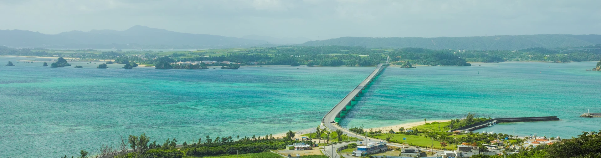
碧海巡禮・琉球王國・那霸四夜連泊
—
把行李安頓在那霸，再從熟悉的據點走向海岸與城跡。五天之間，有跨海長橋與深藍水槽，也有琉球留下的城門、南部地底的鐘乳石，以及可以各自散步、一起用餐的街道。四晚住在同一間飯店，讓同行的家人與朋友少一點搬動，多一點從容。
Day 1
泰越捷航空 VZ568 Thai Vietjet Air
TPE台北桃園
OKA沖繩那霸
Day 5
泰國亞洲航空 FD231 Thai AirAsia
OKA沖繩那霸
TPE台北桃園
Day 2・南部包車
行車總公里數 約 61 km
尼萊卡奈大橋為沿途行經。里程依道路估算，午餐地點待定，尚未計入可能的繞行。路線圖為示意。
輪廓由使用者提供 · 道路資料 © OpenStreetMap 貢獻者
Day 4・北部包車
行車總公里數 約 195 km
古宇利大橋計入古宇利島路段。里程依道路估算，午餐地點待定，尚未計入可能的繞行。路線圖為示意。
輪廓由使用者提供 · 道路資料 © OpenStreetMap 貢獻者 · 回報地圖問題
沖繩的風景，並不只有一種藍。從北岸的珊瑚海色，走向首里的紅瓦石牆，再轉入南部的地底與海濱街區，讓自然、歷史與城市日常，各自在旅程中留下位置。
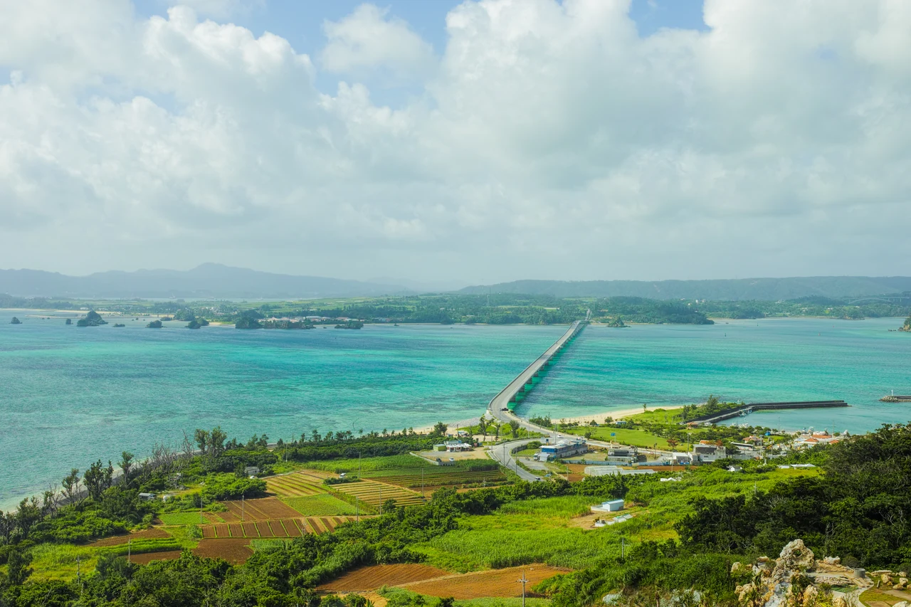
萬座毛的草地盡頭，是被海浪雕成象鼻輪廓的岩壁；古宇利大橋則把視線帶向更遠的海面。從海岬到島岸，淺灘映出青綠，深處轉為濃藍。搭車沿著北部海岸前行，在不同的觀景角度停一會兒，看見珊瑚礁與島嶼共同勾勒的沖繩。
以主要觀景處與橋畔風景為重點，停留與步行配合同行者體力及現場狀況。
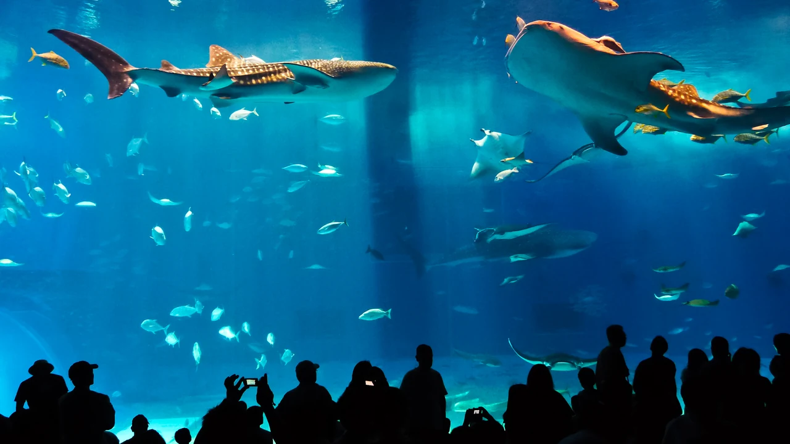
穿過館內較暗的通道，一面深藍色的觀景窗在眼前展開。鯨鯊緩緩游過，鬼蝠魟舒展雙翼，魚群在水中改變方向。在「黑潮之海」前留一段安靜的時間，不必急著走完每個展區，也能感受沖繩海洋的尺度與生命。
以黑潮之海等主要展區為參觀重點，不將全部戶外設施與完整海豚表演視為必到內容。
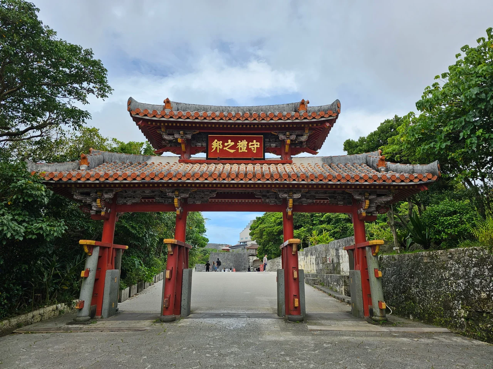
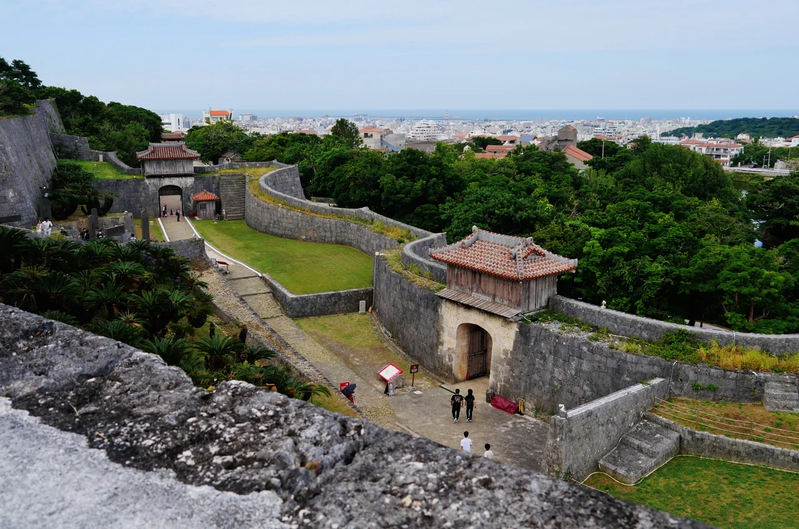
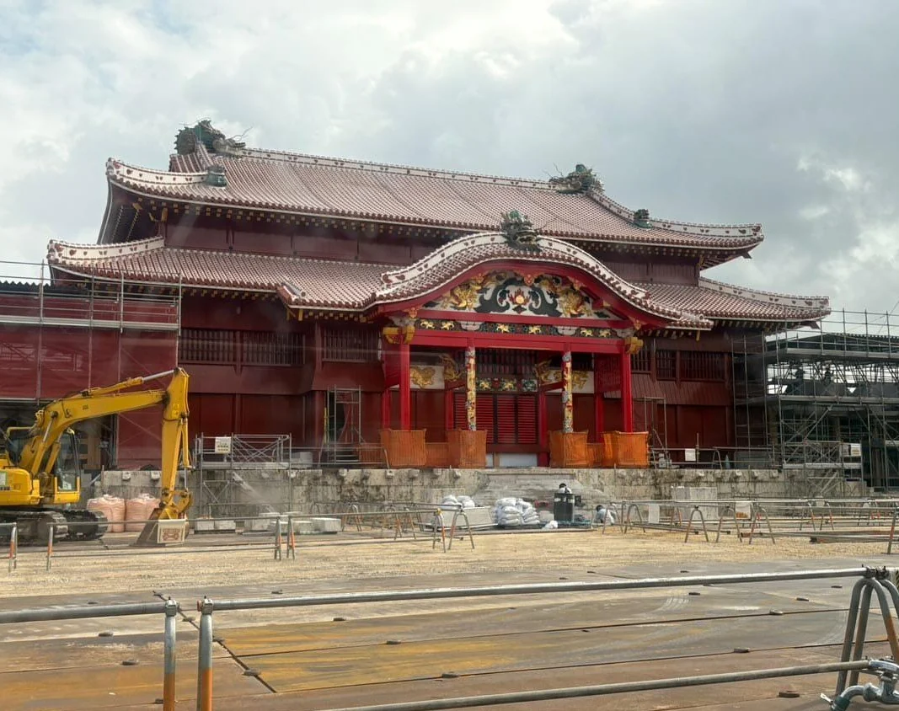
守禮門的紅瓦與牌匾，為首里的王國故事揭開序幕。沿著彎曲的石牆望向那霸，城門、庭院與山城的位置，慢慢串起琉球王宮的空間格局。正殿重建的紀錄，也讓人看見木作、屋瓦與彩繪如何接續這段歷史。
右下圖為 2025 年 12 月的重建紀錄，並非旅行當日現況。實際參觀範圍及是否進入正殿內部尚未確認，以出發前確認的開放資訊為準。
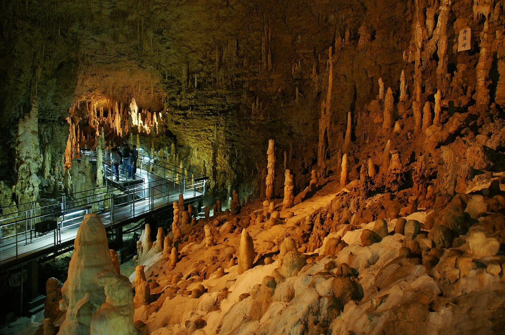
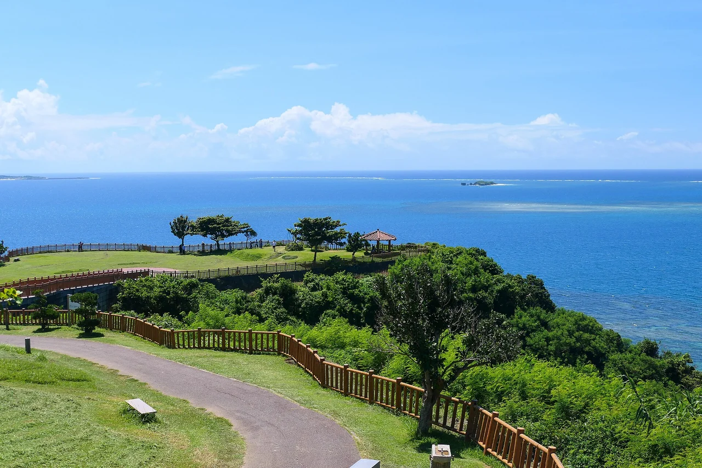
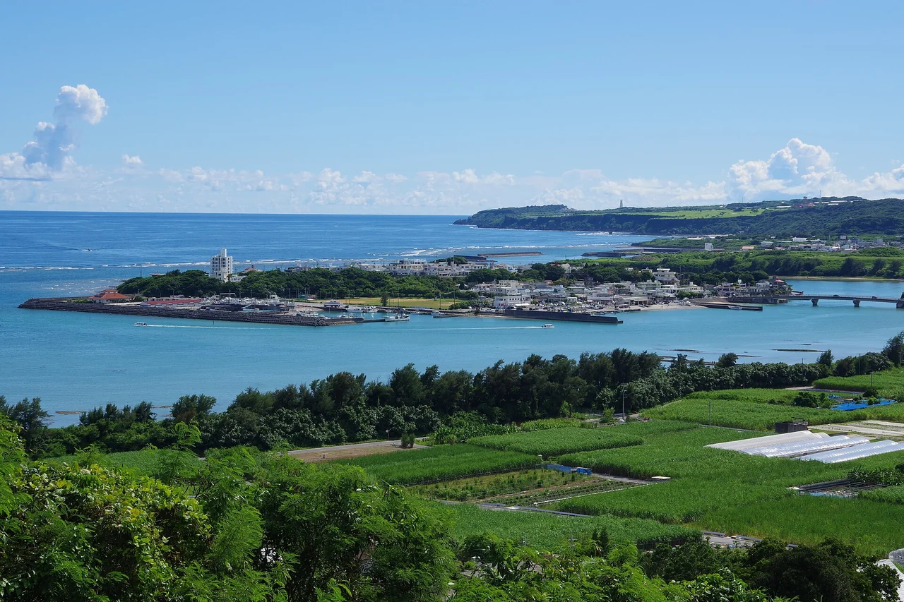
玉泉洞的步道從鐘乳石之間穿過，水滴與石灰岩留下緩慢成形的紋理。回到地面，知念岬的綠地向海展開，新原海灘與奧武島一帶，則是淺海、小島與岸邊生活的另一種風景。南部的這段旅程，讓地底與海岸彼此映照。
洞窟及戶外步行路段依體力安排，實際參觀範圍與停留方式配合同行長輩的狀況。
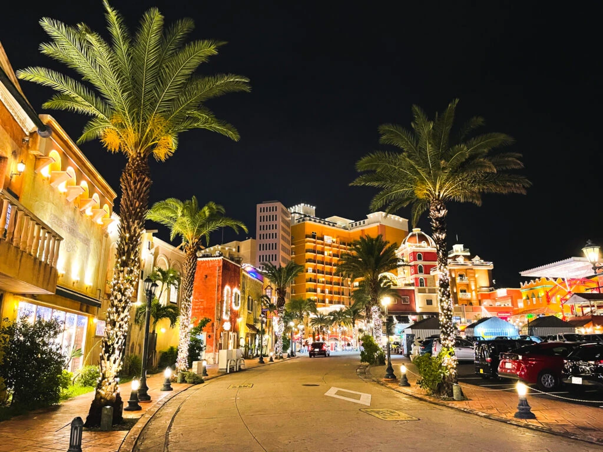
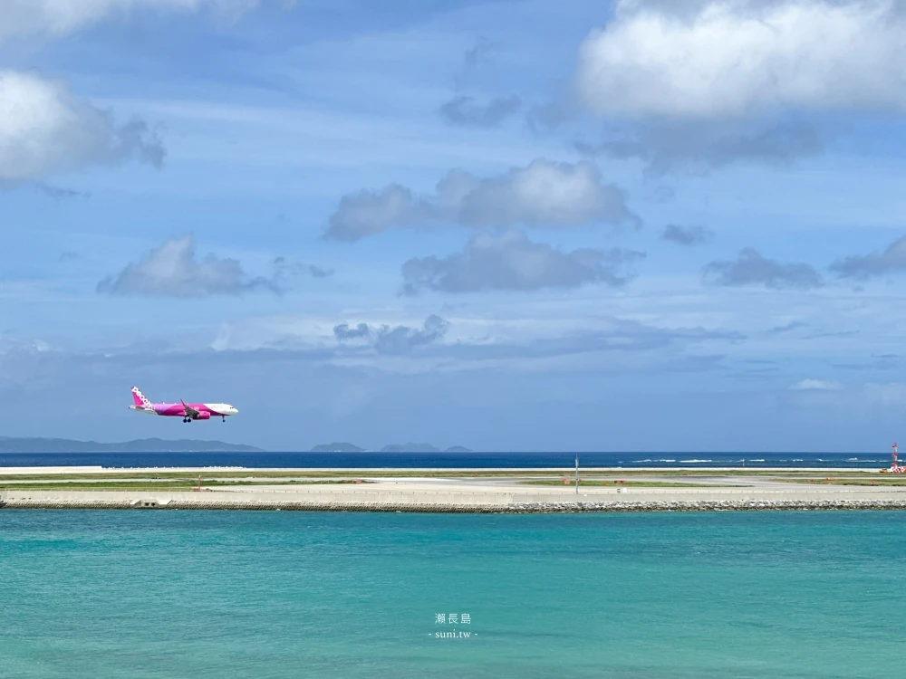
北谷的彩色店屋，與瀨長島沿坡地展開的白色建築，呈現兩種不同的海濱日常。逛一間喜歡的小店，找個地方坐下，或沿著岸邊走一段路；購物、看海與休息，可以依各自的喜好安排。一起旅行，也為彼此留些自在的空間。
照片均為景點歷年實拍，光線、天候、店舖與建築狀況以旅行當日為準；照片經尺寸調整、WebP 壓縮及版面裁切，個別來源與授權列於頁尾。
四晚連泊
Almont Hotel Naha-Kenchomae
—
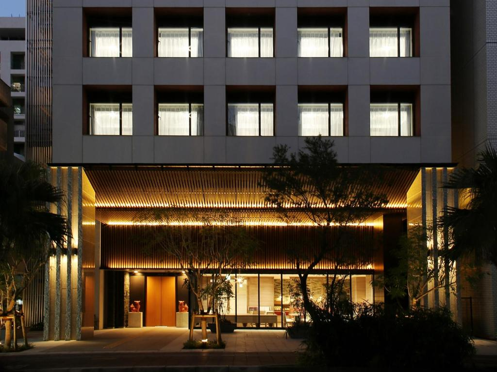
四晚回到同一間飯店，是這趟旅行最踏實的安排。行李不必每天重新打包，親友也能慢慢熟悉附近的街道；早上依當日行程出發，晚間再回到那霸的日常節奏。
飯店位於那霸市中心，鄰近縣廳前站、國際通與市區餐廳。對帶著行李或與長輩同行的家人來說，便利的位置，讓移動與休息更容易銜接。
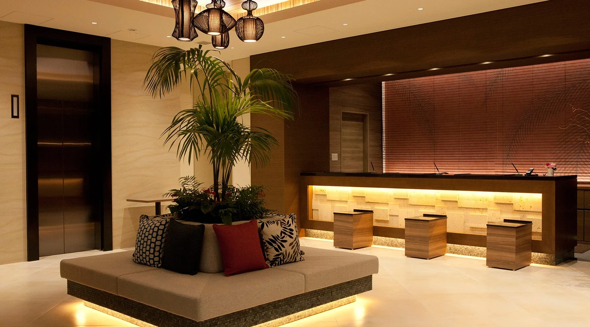
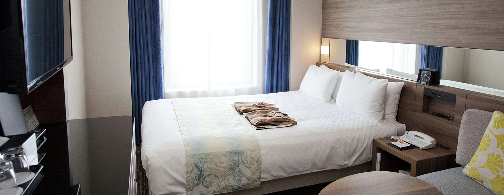
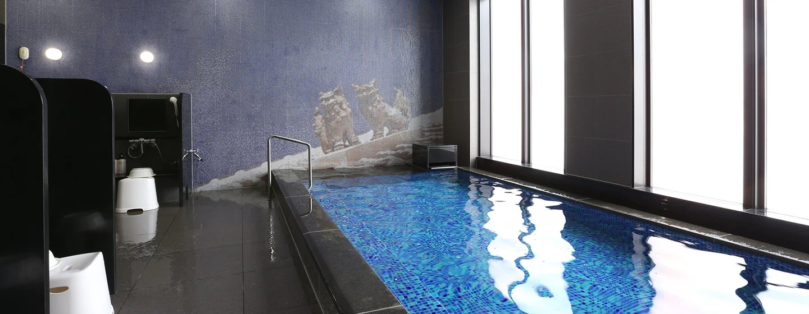
桃園國際機場 — 那霸機場 — 沖繩都市單軌電車 — 阿蒙特飯店 — 國際通晚餐、自由散步 — 返回飯店
從台灣飛往沖繩，五天的南島旅程在午後啟程。抵達那霸後，搭乘單軌電車進入市中心，先把行李安頓在將連住四晚的阿蒙特飯店。第一晚不急著走遠，在國際通挑選想吃的沖繩料理，看看特色商店與沿街燈光，用一段輕鬆的散步，認識那霸的夜晚。
那霸・國際通
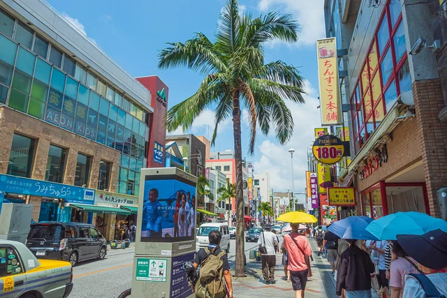
棕櫚樹與特色店舖沿著街道展開。日景照片供辨識街區氣氛，本日於抵達後的晚間自由活動。
Junyu-K · CC BY 4.0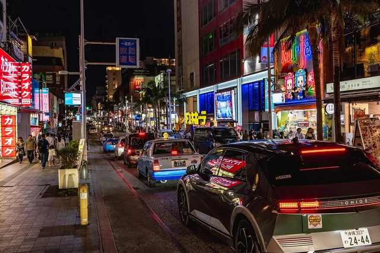
從沖繩料理開始今晚的探索。逛街或休息依個人步調安排，與家人約好時間，再一起返回飯店。
TurnOnTheNight · CC BY-SA 4.0以抵達與安頓為主，晚間輕鬆探索。
| 參考時間 | 行程安排 | 當日節奏 |
|---|---|---|
| 台灣時間 | 桃園國際機場出發 | 搭乘泰越捷航空 VZ568 前往沖繩那霸，展開五天的親友旅程。實際起飛時間以訂位確認單為準。 |
| 沖繩當地時間・預計 | 抵達那霸機場地圖 ↗ | 通關、領取行李後再前往單軌電車站，為長輩與同行親友預留集合及移動時間。 |
| 抵達、通關後 | 搭乘沖繩都市單軌電車縣廳前站 ↗ | 由那霸機場站前往縣廳前站。攜帶行李及與長輩同行時，優先確認電梯位置，依現場狀況候車。 |
| 傍晚至晚間 | 阿蒙特飯店辦理入住地圖 ↗ | 縣廳前站下車後步行約 3 分鐘至飯店。先放下行李、稍作休息，入住時間依通關及實際交通狀況調整。 |
| 晚間自由安排 | 國際通晚餐、自由散步地圖 ↗ | 國際通是今天唯一的正式觀光地點。自行選擇沖繩料理、看看特色商店；第一晚以輕鬆探索為主，不趕行程。 |
| 用餐、散步後 | 返回阿蒙特飯店 | 依各自體力結束今晚的活動。親友約好返程方式，回到同一間飯店休息。 |
17:10 為預計抵達那霸的航班時間，並非到達飯店的時間。通關、行李提領、候車與步行都會影響晚間安排；抵達飯店及晚餐不設定固定時刻。
阿蒙特飯店 — 尼萊卡奈大橋（沿途） — 知念岬 — 新原海灘 — 奧武島 — 午餐 — 沖繩世界、玉泉洞 — 瀨長島 — 阿蒙特飯店
向那霸以南出發，車窗外的海岸漸漸開展。上午沿知念岬、新原海灘走進南城的天然海色，在奧武島看看漁港與日常小食；午後轉入玉泉洞與琉球文化村，傍晚到瀨長島吹海風。一天之間，從太平洋海岬走到地底，再回到白色海濱街區。
南部海岸・沿途風景
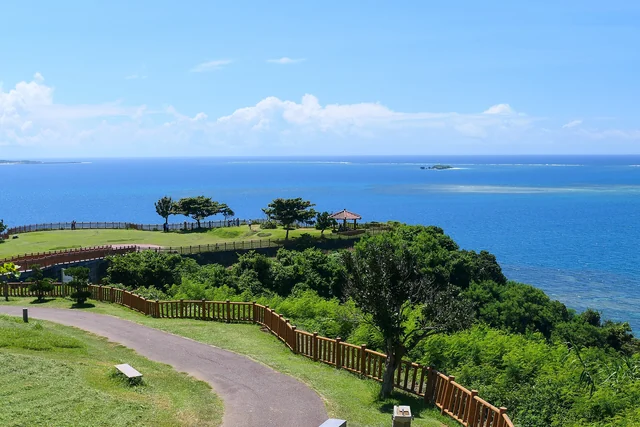
岬角的草地向太平洋伸展。沿主要步道走到觀景處，看海岸線與遠方島影；海風較強時，就近停留拍照。
MaedaAkihiko · CC0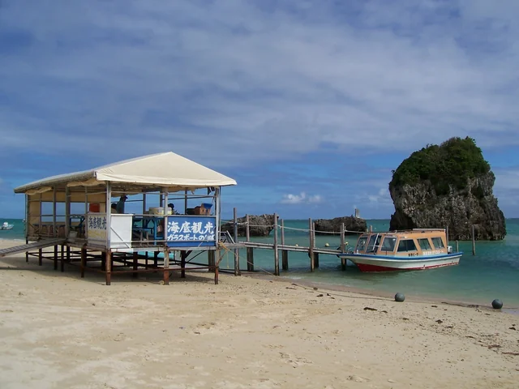
沙灘、海邊岩石與淺灘，保留天然海岸的樣貌。短暫散步、拍幾張照片，不安排下水活動。
7beachbum · CC BY 2.0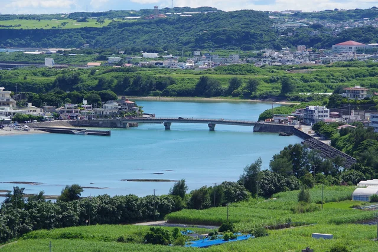
短橋的另一端，是港灣與島上聚落。看看漁港，再依現場情況品嚐沖繩天婦羅；小食自由選購，午餐餐廳仍待決定。
Kugel~commonswiki · CC BY-SA 4.0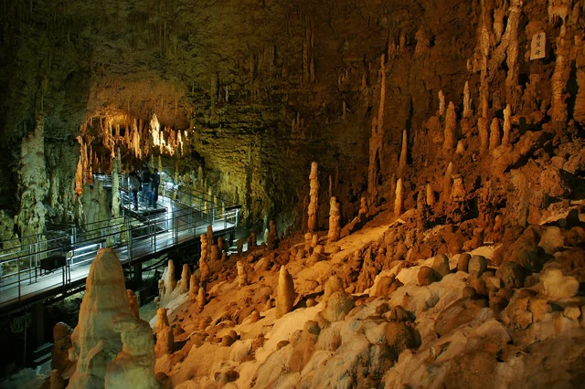
燈光照出鐘乳石與地下水留下的紋理。走出洞窟，再看琉球文化村的紅瓦屋舍與傳統工藝，讓地底風景與島上的生活文化相互連接。Eisa 太鼓表演視當日場次與參觀進度安排。
663highland · CC BY 2.5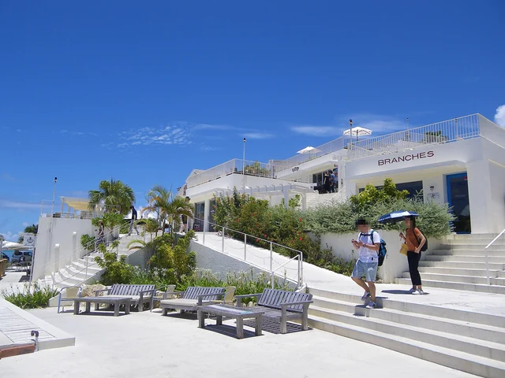
白色店屋沿坡地面向海岸，適合散步或找間咖啡店休息。天候與航向合適時，留意那霸機場的飛機起降，讓午後慢慢收尾。
Kugel~commonswiki · CC BY-SA 4.0以下均為暫定規劃，尚非司機確認時刻。
| 預定時間 | 行程安排 | 停留與集合提醒 |
|---|---|---|
| 阿蒙特飯店出發地圖 ↗ | 出發前完成早餐與洗手間需求，確認全員、隨身物品及車輛後，前往沖繩南部。 | |
| 沿途行經 | 尼萊卡奈大橋地圖 ↗ | 由車窗欣賞跨越山坡與海岸的橋景，作為前往知念一帶的沿途亮點；不另安排固定停車時段。 |
| — | 知念岬公園地圖 ↗ | 約 30 分鐘。欣賞太平洋海岸與岬角自然景觀，以主要觀景步道為主，依海風與長輩體力選擇步行距離。 |
| — | 新原海灘地圖 ↗ | 約 25 分鐘。天然沙灘與海岸岩石短暫拍照；沙地較費力，長輩可在近岸方便到達的位置停留。 |
| — | 奧武島地圖 ↗ | 約 20 分鐘。看看傳統漁村與漁港風情，天婦羅視店家營業及排隊情形自由選購，不保證每間店都能停留。 |
| — | 午餐南城市或奧武島周邊・餐廳尚未確定 | 預留約 60 分鐘。餐廳確定後再核對路線、停車及用餐安排，不預先指定店家。 |
| — | 沖繩世界、玉泉洞地圖 ↗ | 約 135 分鐘。以鐘乳石洞、琉球文化村及傳統工藝為主，另留步行與集合時間。Eisa 太鼓表演視當日場次及參觀進度安排，並非保證行程。 |
| — | 瀨長島海風露台地圖 ↗ | 約 65 分鐘。白色海景街區散步、海景咖啡與自由活動。坡地階梯依體力選擇，飛機起降視天候與航向而定。 |
| —預計返抵 | 返回那霸阿蒙特飯店 | 返抵時間受交通、停車與集合進度影響。結束當日包車安排後，晚餐於國際通或飯店周邊自行選擇、自行前往。 |
以上為暫定行程與停留時間，未經司機確認，並非保證車程。天氣、路況、停車、洗手間與集合所需時間，都可能影響實際安排；各景點依當日情況調整，包車共 10 小時，晚餐不包含在包車時間內。
阿蒙特飯店 — 首里城 — 歌町午餐 — 沖繩縣立博物館常設展 — 歌町新都心商圈 — 榮町市場 — 阿蒙特飯店
上午到首里城，從城門、石牆與宮殿認識琉球王國。午餐後走進沖繩縣立博物館，沿常設展看看這些島嶼的自然環境、往來歷史與生活工藝。午後把時間留給歌町新都心，各自逛街或喝杯咖啡，再搭一站單軌到安里，在榮町的老市場街巷裡找一處坐下吃晚餐。
那霸城郭・新都心與市場街巷
首里城曾是琉球王國的政治與文化中心。從守禮門走向依地勢修築的城牆，可循城門與朱紅宮殿的布局，認識王國接待使節、舉行典禮的空間。火災後的復原延續了琉球建築的工藝，也為這座城添上一段新的歷史。體力許可時，可在園區高處望向那霸市街。
Renate Hano · CC BY-SA 4.0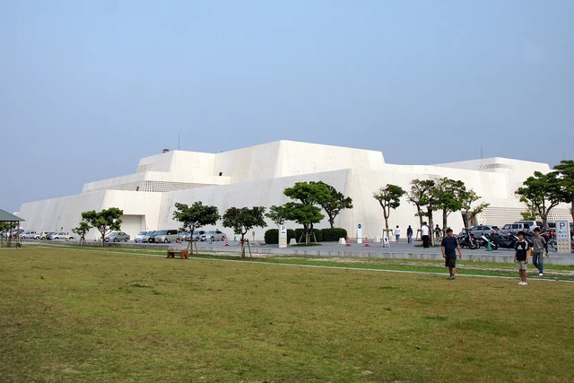
下午參觀博物館常設展。從島嶼地理與生態、琉球的海上交流，到工藝、民俗與戰後生活，展覽把上午在城郭裡看見的歷史，接回沖繩群島的日常。
663highland · CC BY 2.5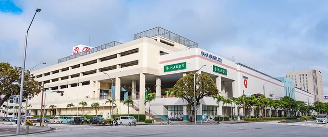
不同於國際通沿街的伴手禮店，新都心多了現代商場和日常採買的去處。San-A Naha Main Place 集合服飾、超市、生活用品、電器及餐飲；也可到周邊逛藥妝和雜貨，或找間咖啡店休息。
TurnOnTheNight · CC BY-SA 4.0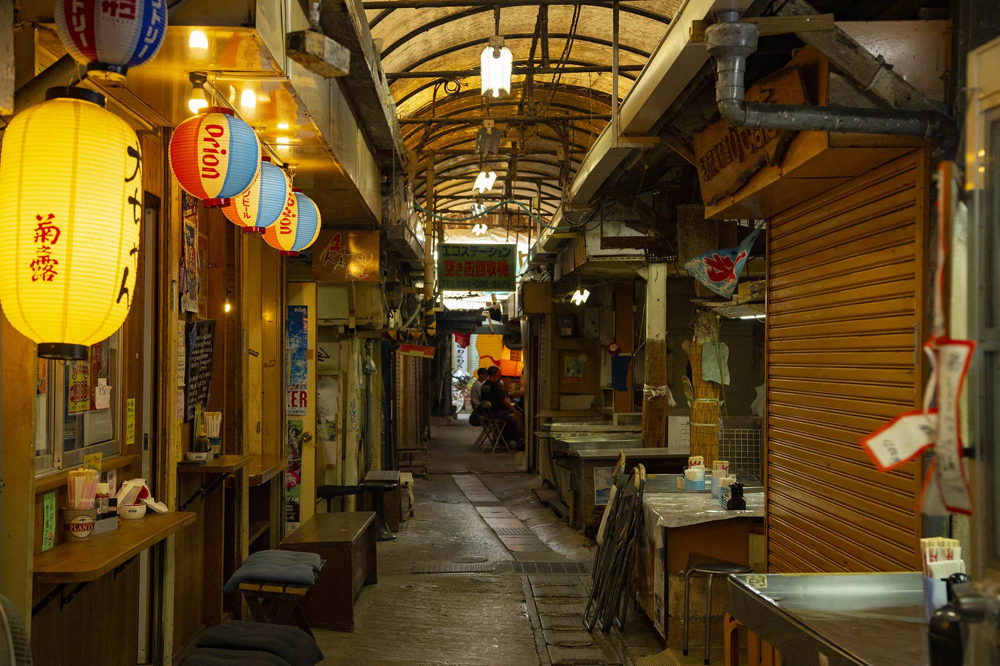
榮町的窄巷白天是居民採買的市場，入夜後，小餐館和居酒屋陸續亮燈。到周邊找間座位舒適、候位不久的店，吃沖繩料理或日式晚餐，餐後依步調散步。
使用者提供以下時間供行程規劃參考，依候車、步行與用餐情況彈性調整。
| 參考時間 | 行程安排 | 移動與停留 |
|---|---|---|
| — | 飯店出發，搭單軌前往首里 | 由縣廳前站搭往 Tedako-Uranishi（てだこ浦西）方向，於首里站下車。城區有坡道，由首里站前往首里城，視同行長輩需求安排短程計程車接駁。 |
| — | 首里城參觀地圖 ↗ | 沿守禮門、城郭與園區景觀參觀，依當天體力調整步行距離。 |
| — | 前往歌町新都心 | 回到首里站後，搭往那霸空港方向，在歌町站（おもろまち）下車。歌町站至博物館及商圈可依體力安排步行或短程計程車。 |
| — | 歌町周邊午餐 | 餐廳尚未選定，在歌町新都心周邊自由選擇。 |
| — | 沖繩縣立博物館常設展地圖 ↗ | 以博物館常設展為主，可依興趣選看自然、歷史與民俗展區。 |
| — | 歌町新都心商圈・自由購物與休閒地圖 ↗ | 商場、周邊商店及咖啡店均可自由選擇，分組活動前先約好集合地點。 |
| — | 前往安里站及榮町市場 | 從歌町站往那霸空港方向搭一站至安里，出站後步行前往榮町市場。 |
| — | 榮町市場周邊晚餐、散步地圖 ↗ | 晚餐餐廳尚未選定，視店家營業與候位情形選擇，優先考量座位及進出動線。 |
| 後 | 返回飯店或自由活動 | 由安里站往那霸空港方向至縣廳前站，再返回飯店；亦可視體力分乘計程車。 |
八人同行可視需求分乘計程車。首里城園區有坡道，長輩可縮短步行距離，並先約好會合位置。
Yui Rail 官方路線 ↗
阿蒙特飯店 — 萬座毛 — 古宇利島 — 古宇利島周邊午餐 — 沖繩美麗海水族館 — 北谷美國村 — 阿蒙特飯店
從那霸沿西海岸往北，先在萬座毛的石灰岩海岬望向東海，再穿越古宇利大橋，在島岸看淺灘與外海的藍綠層次。午餐留在古宇利島周邊自由選擇，午後走進美麗海水族館，從珊瑚礁一路看到黑潮之海。回程在北谷美國村留一段海邊散步的時間，返抵飯店後，再依各自步調用餐、逛街或休息。
沖繩北岸・沿途風景
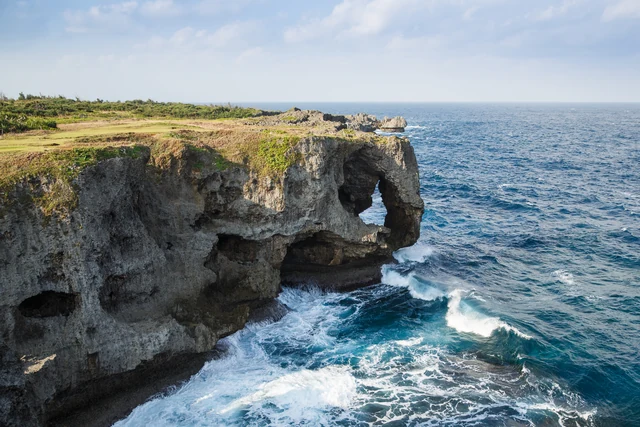
走到海岸草地盡頭，琉球石灰岩在海面上勾出象鼻般的輪廓。沿主要觀景處看東海與斷崖，留約 25 分鐘拍照與集合。
Photo by CEphoto, Uwe Aranas · CC BY-SA 3.0車子駛上跨海長橋，靠岸的淺綠漸漸轉成外海的深藍。抵達島上後，在橋畔與近岸找個方便到達的位置短停拍照。午餐於古宇利島周邊自由選擇，餐廳待定。
Takuya ASADA · CC BY 2.0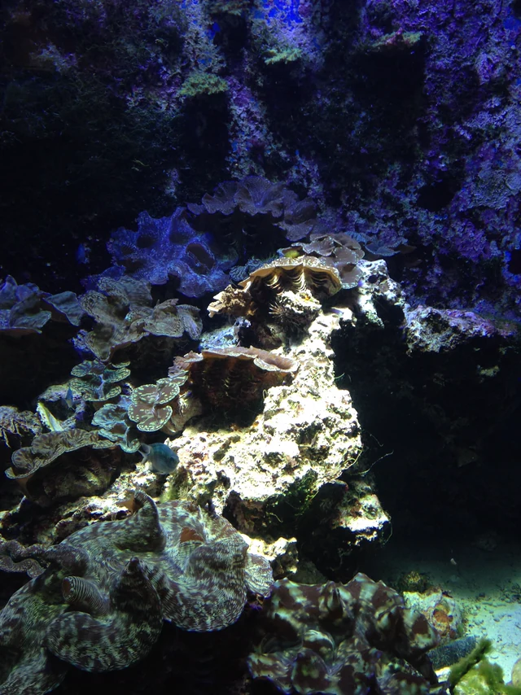
先看珊瑚礁與穿梭其間的熱帶魚，再往館內的「黑潮之海」。隔著大型觀景窗，可以留些時間觀察鯨鯊與鬼蝠魟在水中游動的姿態，沿途也能從展示認識海洋生物與保育。停留約 2 小時 10 分鐘，以館內展區為主，展示以當天館方安排為準。
黑潮之海 SteFou! · CC BY 2.0 ／ 館內礁區 そらみみ · CC BY-SA 4.0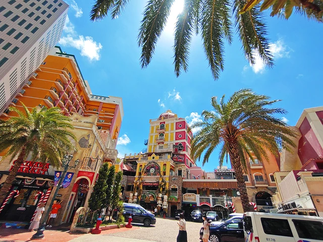
傍晚到美濱，彩色建築與美式店招一路延伸到海邊。可在 Depot Island 一帶逛特色小店，或在咖啡館坐一會兒。散步、購物與拍照皆可自由選擇，停留時間依當天交通調整。
使用者提供以下時間均為暫定，尚未經包車司機確認。
| 參考時間 | 行程安排 | 移動與停留 |
|---|---|---|
| — | 阿蒙特飯店出發，前往萬座毛地圖 ↗ | 從那霸出發，沿西海岸北上。出發前確認全員與隨身物品。 |
| — | 萬座毛參觀、海岸觀景地圖 ↗ | 約 25 分鐘，以主要觀景處與拍照為主，依海風與同行者體力調整步行距離。 |
| — | 前往古宇利島 | 沿北部道路前往屋我地島，搭車穿越古宇利大橋。 |
| — | 古宇利大橋、古宇利島地圖 ↗ | 約 30 分鐘，在橋畔與近岸短暫看海、拍照，依體力選擇步行距離。 |
| — | 古宇利島周邊午餐 | 餐廳尚未選定，可品嚐沖繩在地料理或自由選擇餐點。八人同行，依座位與出餐情況彈性調整。 |
| — | 前往美麗海水族館 | 由古宇利島周邊前往本部町，預留上下車與集合時間。 |
| — | 沖繩美麗海水族館參觀地圖 ↗ | 約 2 小時 10 分鐘，以珊瑚礁、熱帶魚與黑潮之海等館內展區為主。 |
| — | 前往北谷美國村 | 從本部町南下，抵達時間依道路及停車情況調整。 |
| — | 北谷美國村自由參觀地圖 ↗ | 可在 Depot Island 一帶散步、拍照或逛特色商店。停留時間視前段行程與交通彈性調整。 |
| — | 返回那霸阿蒙特飯店 | 預計約 18:00 返抵，包車至飯店為止。晚餐、國際通購物與休息依個人步調安排。 |
同行八人，包含 80 歲以上長輩，步行可依體力縮短並預留休息與集合時間。實際行程視交通、用餐與停車狀況調整，北谷美國村停留時間可彈性縮短。返回飯店後的晚餐及夜間活動不包含在包車行程中。